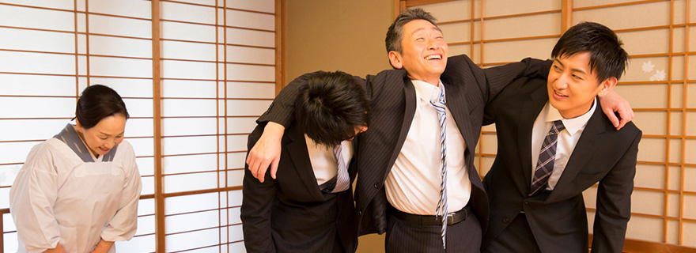
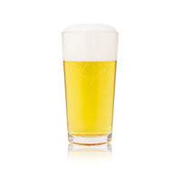
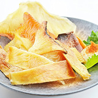

花金

毎日飲みたい
飲まなきゃ寝れない
お酒ほしい

同期と毎週飲みに行ってますが、まだ来たことのない人もいるので、なんとか全員が集まった状態で飲みに行きたいです。（と思ったらやめてしまったので１度もそいつと飲みに行くことはないでしょう
意識の高い話なんて1ミリもしません。最初から最後まで下ネタです。お酒と下ネタ以上のタッグは見たことないくらい素晴らしい組み合わせです。意識の高い話なんてしてたら酔えないです。
終電はない
 しっかりみんな1次会で帰ります。もっと飲みたいと言ってもしっかり終電までには帰ります。時間の意識がしっかりしていて社会人として素晴らしいですね。みんなは電車が同じ方向なので楽しく話しながら帰れますが、私は方向どころか線すら違うので一人ぼっちの帰宅です。寂しいです。帰る方向どころか会社まで違くなりました。